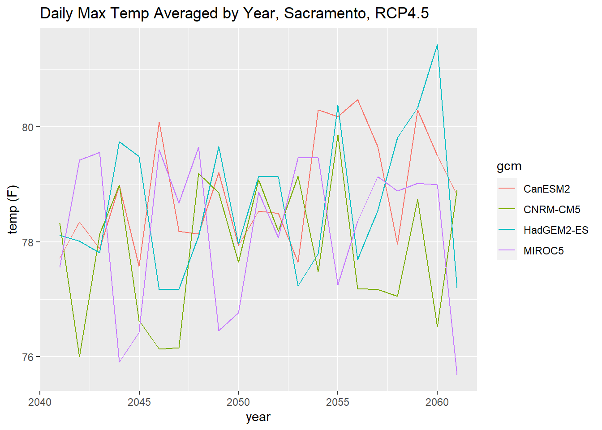

We look forward to seeing you at the workshop. Please read the information below as it contains some important logistics info as well as what you need to prepare in order to complete the hands-on exercises.
The workshop will be held on:
Friday, October 1, 2021
10:00 - 11:30am (PDT)
This workshop will be held on Zoom. The Zoom link will be emailed to everyone who registers. If you have not gotten the Zoom link within 24 hours of the workshop, please email the instructor. You do not need a Zoom account to join the workshop.
In addition, the instructor will hold drop-in Tech Support Office Hours on Thursday Sept 30 from 4-5pm for anyone who has questions or needs help installing the packages for the workshop (see below). Office Hours will use the same Zoom link as the workshop. No sign-up is required, just drop in.
Registration is required. If you have not already done so, you may register for workshop here. Registration will close 1 hour prior to kick-off.
The workshop will include a mix of presentations and short hands-on exercises using R Notebooks. The R Notebooks will include a combination of working code that you just have to run, and a few pieces that require you to write your own code. Answers will be provided. Doing the exercises is encouraged but not required.
The material will be sequenced from a general overview to writing code. People are welcome to drop-off whenever they’d like. The final 30 minutes will be a semi-structured exercise.
This workshop presumes some very basic familiarity with R and RStudio. Most of the code examples will be ready-to-run so don’t fret if you’re a bit rusty. If you’ve never used R before, you’re welcome to watch but we won’t have time to trouble-shoot basic setup or syntax problems.
Anyone who wants to participate in the hands-on exercises should have R setup before the workshop. You may either create a free RStudio Cloud account (recommended), or install all the required packages on RStudio Desktop. See below for details. Both options are easy, but will not be able to provide assistance for computer setup during the workshop.
Familiarity with climate data is helpful but not required. The workshop will include a high-level overview of the datasets on Cal-Adapt, but not in any depth. If you’re unfamiliar with climate data and terms like GCM, RCP, etc., consider watching the excellent webinar An Introduction to Climate Data from the Cal-Adapt team.
If you would like to do the hands-on exercises, you have two options. You can run RStudio Desktop on your own laptop / desktop computer, or you can run a RStudio virtual machine from RStudio Cloud (i.e., in a browser). Both options are free and fairly easy to set up.
The easiest way to do the workshop exercises is using RStudio Cloud. This is recommended for beginners and anyone who hasn’t touched R in a while because you don’t have to update R and RStudio, install packages, download data, or any other set up. All the workshop materials will be waiting for you in a VM prepared by the instructor. If you never used RStudio Cloud before, it’s well-developed and looks and feels nearly identical to RStudio Desktop.
You can create a free account on RStudio Cloud using an email address or your Google or GitHub credentials. The free plan offers 25 hours of usage per month, which is more than enough for the workshop. Once your account is setup, you’re done for now. The day before the workshop, the instructor will send out a link for the workshop VM, which you can click on to make a copy of it in your own RStudio Cloud workspace. All the required packages, R notebooks, and data will be ready to go.
If its been more than 6 months since you updated R or RStudio Desktop, please update them both. You should be using R version 3.6 or later. Windows users also need to install RTools in order to install packages from GitHub (which includes caladaptr).
After you’ve updated R and RStudio, please run this script to install all the needed packages including caladaptr and caladaptr.apps. You can copy-paste the commands into RStudio and run the commands. This could take 15 minutes or longer so don’t wait until the day of the workshop to start. If you get an error message installing any of the packages, please contact the instructor. The setup script also fetches some data using the Cal-Adapt API, so if you see a plot at the end it means its working.
If you see this plot at the end of the setup script, it means everything is working:

The workshop slides
A second monitor is strongly recommended so you can view the instructor’s screen in one monitor while you run R on the other. A tablet might suffice as your ‘Zoom’ device while you run R on your laptop. If you’re truly limited to just one screen, check out these tips for viewing Zoom and an application window side-by-side.
If you have any questions please contact the instructor.